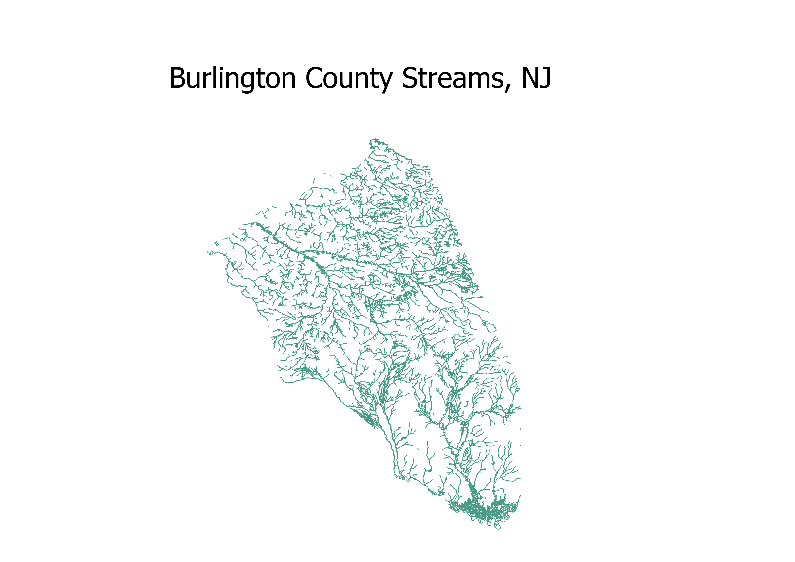
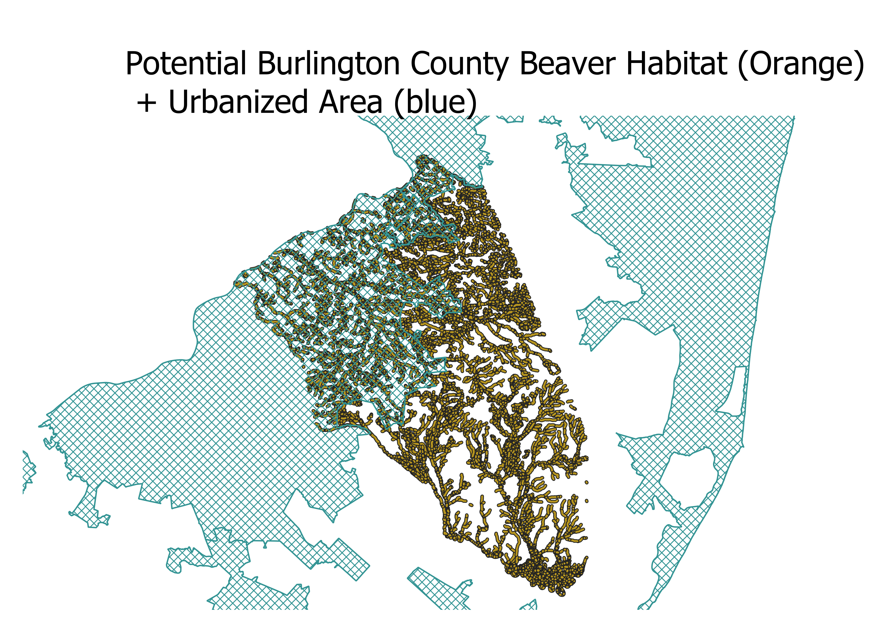
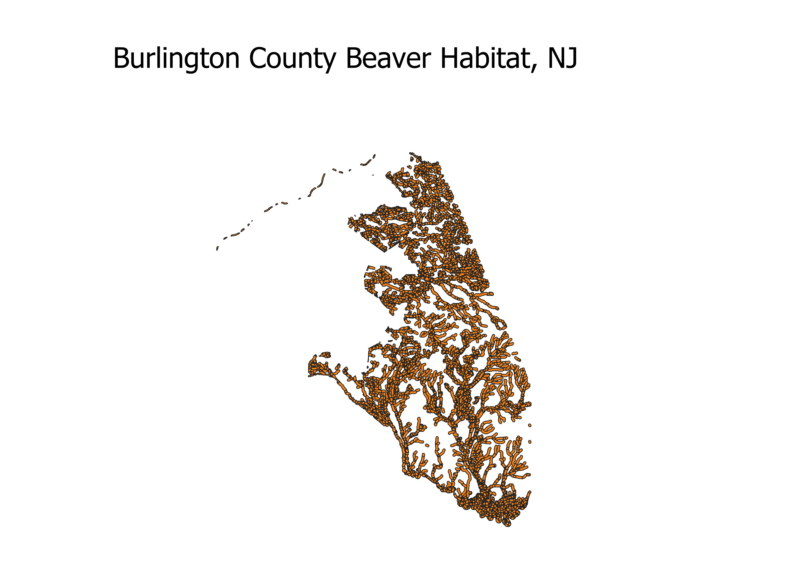

Homework 10: Geoprocessing Analysis
Ken Donny-Clark
The question I ask is how much of potential beaver habitat in burlington county, NJ is disrupted by human encroachment in the form of urbanization. Using the geoprocessing analysis techniques I will describe in detail below, we can determine that roughly over 1/3rd of the potential beaver habitat in burlington county is taken up by urbanization.

Beavers make their dens in streams, so I first intersected data of streams in new jersey with a shapefile of burlington county to have something to go off of.

Next I found online that beaver's territory is a little under 1km from streams, so I made a buffer of .8 kilometers from the streams to represent potential beaver habitat. Since beavers cannot live in streams near heavily urbanized environments I obtained data for urbanized areas in burlington county. I then overlayed the shapefile that represents human encroachment and urbanization to get a general sense of how the proportions would look.

Finally, I used a difference between the potential beaver habitat and the urbanization shapefile to find the beaver habitat, where there was no human encroachment, and within .8 KM of a stream, this is what you see on this map indicated by orange.
Data used for this project
Link to the vector file for Burlington county
Sources for online data:
Urbanized areas: https://njogis-newjersey.opendata.arcgis.com/datasets/ed9dae64388f46d8abc2c867cd86b6e8_0
NJ streams: https://gisdata-njdep.opendata.arcgis.com/search?q=streams\